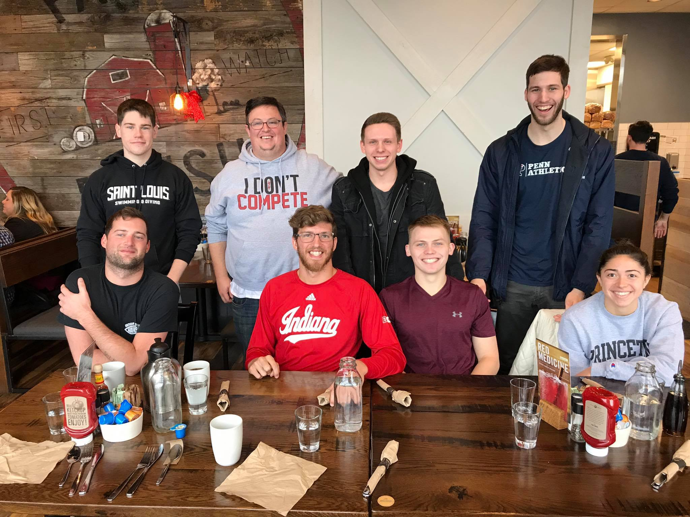
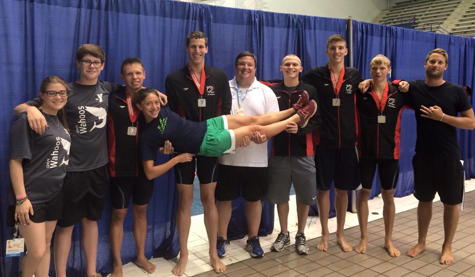
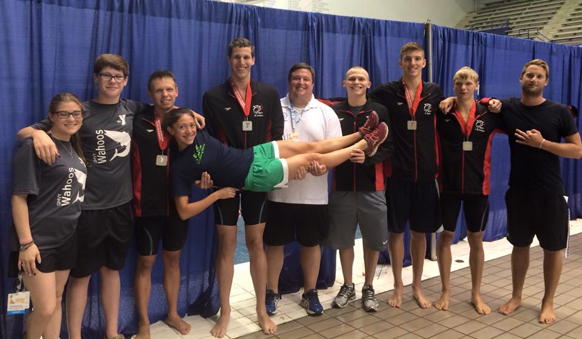
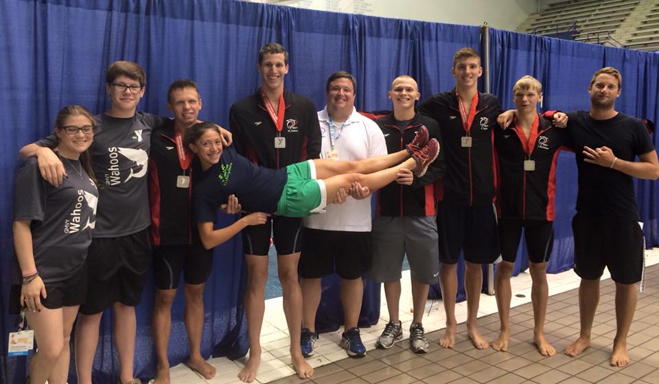

 


About Me
Resilient and values-driven professional with 10+ years of leadership experience in high-performance, people-focused environments. Proven ability to guide teams, manage operational complexity, and deliver impact under pressure. After years of building systems and leading from the front lines, I’ve transitioned into the data and analytics space — blending deep human insight with strategic, data-informed decision-making.
I’m seeking a remote opportunity where I can contribute meaningfully, grow sustainably, and work alongside others who care about doing things the right way. I’m especially energized by work that improves people’s lives — in healthcare, finance, education, or any mission-aligned space.